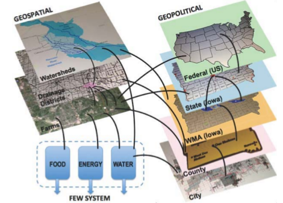

An introduction to IFEWs
The objective of this project is to develop cyber-enabled interfaces for decision support within and across spatial, political, and temporal scales to balance Food-Energy-Water (FEW) constraints and tradeoffs to ensure resilience and sustainability. Specifically, we use as our test case the unique situation in the Midwest, in which we deal not with too little water, but too much water. With little or no need for irrigation, but with soils and topography that trend towards waterlogged conditions, Iowa has invested heavily to create appropriate subsurface drainage systems (or drainage "tiles") for the abundant farm land, which produces the most corn in the US, of which almost 60% is diverted to biofuels. This drained water, much of which is aggregated into larger networks by "drainage districts" operated by county governments, then, with flow from the rest of the watersheds, exits into the major Iowa rivers, which in turn empty into the Mississippi River.

Multiple tiers of oversight and policy are involved from municipal through federal governments, along with international implications for food and biofuel availability. Figure below shows the complex relationship between Iowa farm, the physical tiers of water entities, and the local through federal taxing and policy authorities. These spatial and political entities, with diverse stakeholders, are connected in a variety of ways, which create a complex network resulting in unanticipated system outcomes. The FEW challenges associated with our case are primarily due to the farmers' need to fertilize their fields to maximize crop yield for both biofuel and food production, and the mismatch in timing between periods of high drainage water flux and nitrogen movement (early spring) and crop uptake (summer), with the resulting excess nitrogen being transported through the waterways to the Gulf of Mexico, resulting in a hypoxic Dead Zone - with obvious detrimental environmental, societal and economic impacts. Driving much of the decision making at local levels are policies and incentives implemented at higher levels and vice versa, with no real understanding of the potential unintended consequences.
-
